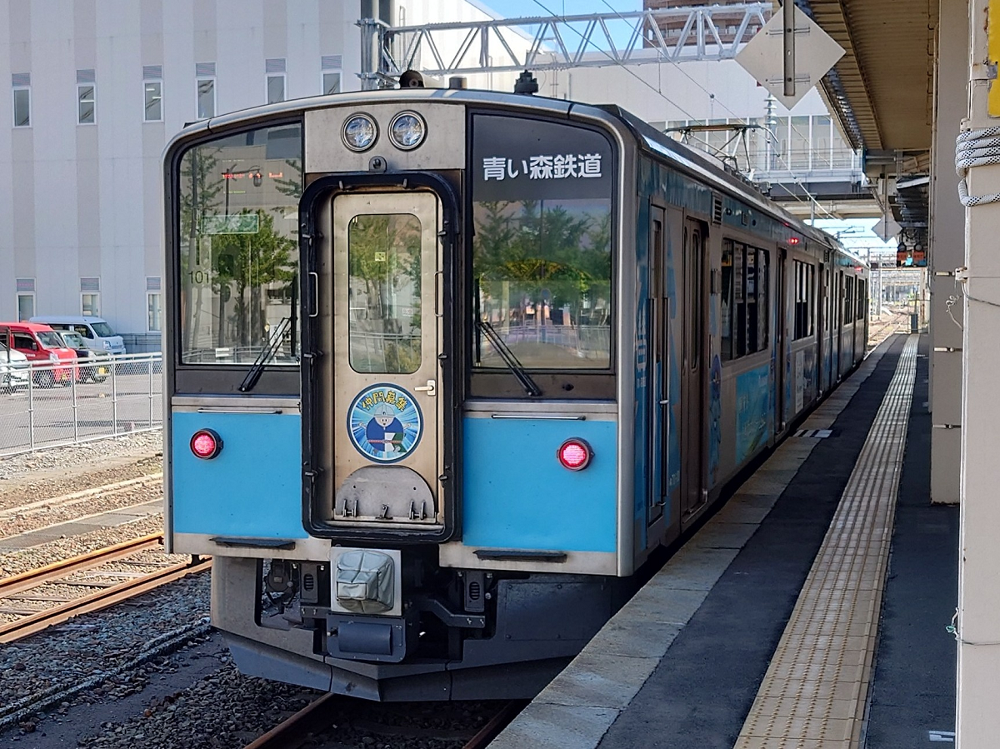
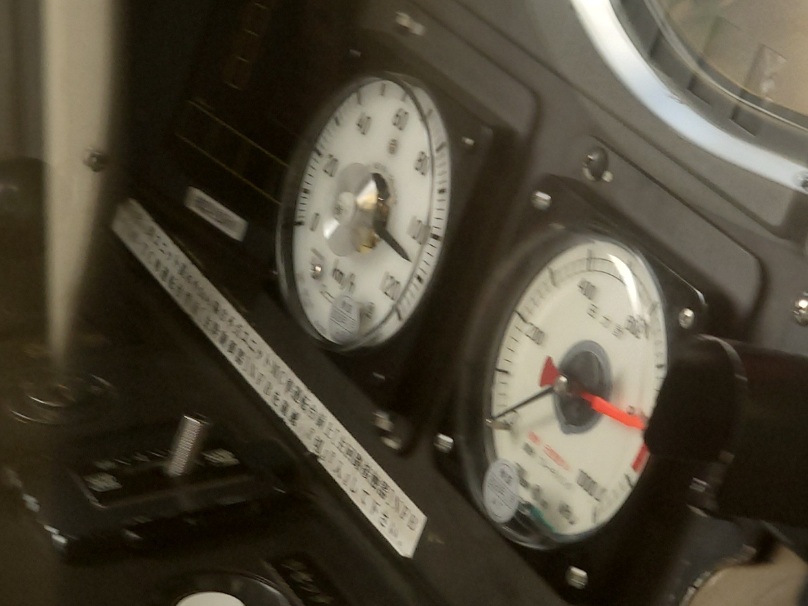

はじめに
こんにちは。今回は、青い森鉄道の快速列車に乗ってみた、感想を書いていきます。
そもそも、青い森鉄道とは？
ざっくり言えば、JR東日本の東北本線の一部区間を引き継いで運行している第三セクター鉄道会社です。IGRいわて銀河鉄道線と連携し、青森県内を走行しています。
（ちなみに、車両自体はIGRいわて銀河鉄道線を跨いで、八戸駅から盛岡駅まで運行することが多いです。）
- 運行区間: 青森駅から目時駅まで(複線, 20,000V交流電化)
- 最高速度: 110km/h(青森駅～目時駅)
- 運行車両: 青い森701系, 青い森703系(E721系ベース/一部)
- 主要な駅(一部): 青森駅, 浅虫温泉駅, 野辺地駅, 三沢駅, 八戸駅
乗車方法と注意点
切符を購入する際は、青森駅や八戸駅の窓口、自動券売機などで行いますが、一部無人駅では券売機すら無いので、車内で整理券を取って、降車時に料金を支払う必要がありますので、その点注意が必要。
（全駅に、券売機ぐらいつけてくれよって思うのは僕だけではないと思いますが…）
あと、券売機と窓口の両方で電子マネーやクレジットカード、QRコード決済はほぼ利用不可(定期券のみ利用可能)です。
また、青い森鉄道の全列車は、JR東日本のICカード「Suica」や「PASMO」などは完全に利用できませんので、切符を購入するか、現金で支払う必要があります。

来たのは自走する簡易旅客用コンテナ(体質改善版/青い森701-101)
(HB-E220でも同じこと言われてますが…)
いざ、乗車！
車両については、(不規則なのでなんとも言えないが)青い森701-101の場合は、セミクロスシートなのも影響しているのか、乗り心地は言われているほど悪くはない。
ただ、車両自体が老朽化しているのは確か(701系1500番台と同等/2002年製造)で、冷房のエアコンが弱かったり、トイレが臭かったりと、快適とは言い難い感じ。
青い森703系(E721系ベース)だと、車両自体が新しいのもあって、乗り心地は結構良い感じ。揺れもそこまで酷くはない。
※701系恒例（？）のケツヒーターの熱さは、アホな程の熱さで変化は無いですが…
こいつ、速いぞ！？
701系の最大速度が110km/hなのは知ってたが、実際快速に乗車すると、結構速い。
特に、西平内駅から小湊駅までのほぼ直線の区間は、110km/hで走行していた(車両後方側のメーターで確認)ので、普段の各停よりも流石に速さを感じられる。
ただ、車両自体の老朽化＆貨物列車の通過による多少の路盤の歪みもあるのか、揺れは結構ある感じ(701系の場合、703系は別)。

西平内駅から小湊駅を110km/hで走行中
(ピンボケ写真)
八戸に到着！
無事（？）、八戸駅に到着すると、すぐ次のダイヤの行先表示に。
所要時間は、大体1時間20分弱くらい。
奥羽本線+東北新幹線の大体2倍の所要時間がかかる。大体下みたいな感じ。
青い森鉄道で青森駅から八戸駅: 1時間22分
奥羽本線+東北新幹線で青森駅から八戸駅: 45分
ただ、青い森鉄道の場合、路盤や線路の工事が入ると、これよりは時間がかかるかも。
まとめ
時間があれば青い森、なければ新幹線で移動がおすすめ。では、また次回。
※ちなみに、青い森鉄道では、100km未満でも障がい者割引が適用されます。